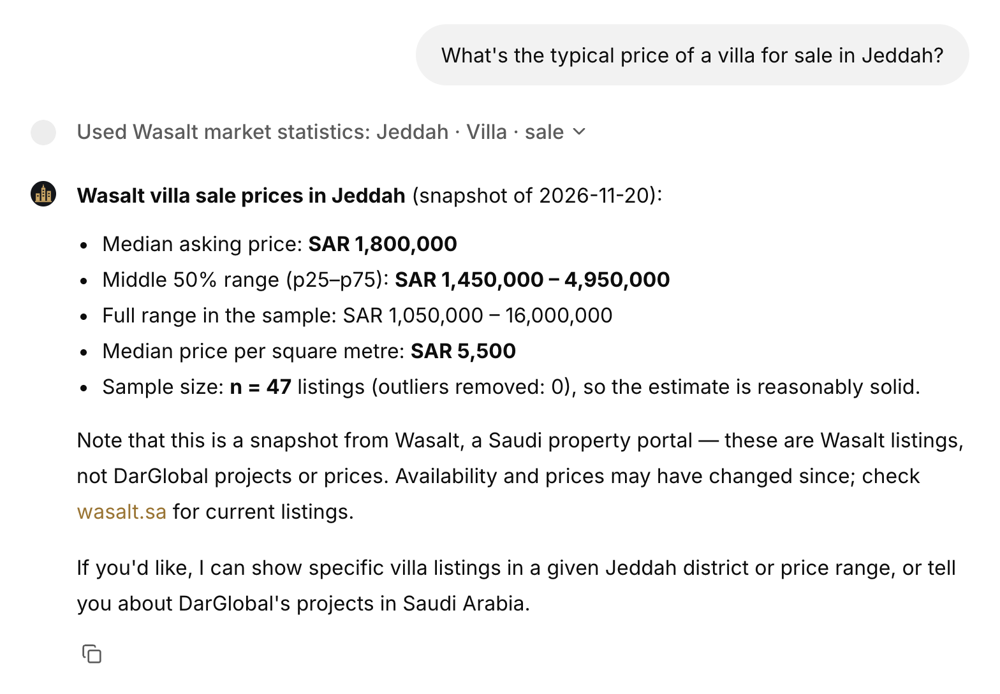

DarGlobal Property Assistant
TL;DR
An agentic chatbot that answers questions about DarGlobal projects and the Saudi property market, built on scraped DarGlobal and Wasalt data. Every link and price in an answer is checked in code before the user sees it.
One LangChain v1 agent with four tools: hybrid search over DarGlobal content, SQL search and market statistics over Wasalt listings, and a clarifying question with buttons. A middleware layer checks each draft answer against the tool results and sends it back for revision if a link, price or source is wrong. Shipped with Docker Compose and running on a public URL.
- My role
- Solo: requirements, data pipeline, agent, backend, UI, evaluation and deployment.
- Time & status
- 3 days (brief received 18 Nov 2026, delivered 20 Nov 2026). Technical assignment; live and open source.
- Key results
-
24/24evaluation cases passed (correct and sourced) 0answers with an invented link or price ~1 sto the first streamed step on the live URL
- Stack
- Python 3.12 · LangChain v1 / LangGraph · DeepSeek (OpenAI-compatible) · Postgres 16 + pgvector · FastAPI · Chainlit · Docker Compose · Tailscale Funnel · GitHub Actions
Problem
The brief: scrape DarGlobal and Wasalt, build an AI chatbot on that data, run it in Docker and deploy it to a working URL. Building something that answers is quick. The hard part is building something a property developer could put in front of buyers:
- Two sources that must not be mixed. DarGlobal publishes project marketing content and almost no unit prices. Wasalt is a third-party portal full of priced listings from other advertisers. A careless bot presents a stranger's listing as a DarGlobal unit.
- Invented numbers are a liability. A made-up price or a made-up URL in a real-estate answer is worse than no answer.
- Scraped text is untrusted. Blog posts link to about 150 outside domains, and listing titles are written by advertisers. Any of it can carry instructions aimed at the model.
- The live DarGlobal site is behind bot protection (a CAPTCHA), which I chose not to bypass.
Solution
- One tool per source. DarGlobal content goes through hybrid retrieval; Wasalt goes through SQL, so prices and counts are computed, not generated. Each tool result is labelled with its source.
- Code-checked answers. Every link must appear in this conversation's tool results and point to darglobal.co.uk or wasalt.sa; every price must match a number in the data; the source must be named. A failing draft goes back to the model with the reason, up to two times, then a safe fallback.
- Ask instead of guess. “I want an apartment” is too vague to search, so the agent asks back with
buttons (a LangGraph
interrupt), and the conversation resumes from the checkpoint. - Visible progress. The UI streams each tool step as it happens, so the user sees work within about a second even when the full answer takes several.
- Guardrails. A leak guard on everything the user sees, PII masking, per-IP and daily rate limits, and API keys that never leave the backend.


run_agent()
serves the chat UI and the API.Data
DarGlobal
481 URLs from the official sitemap, fetched as archived copies from the Wayback Machine because the live site returns a CAPTCHA to scripts. Text comes from the CMS JSON embedded in each page, so there is no menu or footer noise.
Wasalt
A listing snapshot taken on 19–20 Nov 2026 through the public sitemap, following robots.txt and llms.txt. Advertiser contact details are not stored.
Components
pgvector (bge-small) and an in-memory BM25 index, fused with reciprocal rank fusion (k = 60), top 20 to an optional reranker, top 4 returned. Says not found instead of returning weak matches.
Filtered SQL by city, buy or rent, type, bedrooms and budget. Returns rows with their wasalt.sa links.
Median, p25–p75 range and price per m² after an IQR outlier filter, with the sample size so the answer can say how solid the estimate is.
Clarifying question with 2–5 options. Pauses the graph with interrupt; the UI shows buttons.
Runs after each model call without another LLM call. Checks links (seen in tool results, allowed host), prices (match a number in the data, with locale-aware parsing) and that the source is named.
Before an answer or a question reaches the user: n-gram overlap with the system prompt, internal tool names, secret env names and key-like strings. A match is replaced with a polite refusal.
PII masking, summarisation of long threads, model and tool call limits, retries, optional model fallback, and today's date added to the system prompt on every call.

Technical challenges
A source behind bot protection
darglobal.co.uk serves a CAPTCHA to scripts.
Use the official sitemap as the list of pages and fetch each one from the Wayback Machine, with a fallback to older copies. No bypass.
401 pages and 40 projects, with the snapshot date stored per chunk so answers can say how fresh the data is.
Links you cannot trust
Tool results contain about 150 outside domains (blog references, advertiser text). “The link was in the data” is not enough.
A link must appear in this conversation's tool results and point to an allowed host (darglobal.co.uk, its CDN, wasalt.sa).
0 answers with an invented or foreign link in the evaluation.
“SAR 36.700” is not 36.7
In Indonesian, a dot groups thousands. The price check read SAR 36.700 as 36.7, found no such price in the data, and rejected a correct answer twice.
Treat such a number as ambiguous: the parser returns both readings (36,700 and 36.7), and the answer passes if either one is in the data. Unit tests cover both locales.
The Indonesian rent case passes without revisions.
A leak guard that cried wolf
The prompt-overlap check flagged normal answers because long URLs share tokens with the prompt.
Remove URLs before building n-grams; keep the other signals.
The guard blocked 0 legitimate answers in the evaluation, and the unit tests still catch prompt leaks and injection hidden inside tool results.
The judge had no calendar
DeepSeek's thinking mode rejects a forced tool_choice,
and the LLM judge called a snapshot dated today “in the future”.
JSON mode for the judge, and today's date in its prompt.
Judge and code evaluators agree on all 24 cases.
Decisions backed by data
Final answers are not token-streamed, because a draft must pass the check before anyone sees it. The cost is waiting for the whole answer, so I measured how long that wait is per question type.
Conclusion: stream steps, not tokens. Showing each tool step as it starts (“Wasalt market statistics: Jeddah · Villa · sale”) gives the user feedback in about a second without showing an unchecked draft. On the live URL the first event arrives in about 1 s.
Limitation: three multi-step cases is a small group; the median says more about the shape than the exact number.
Other decisions
- One ReAct agent, no router. My first design classified the intent and routed each message down one path. A single agent choosing its own tools handles mixed DarGlobal + Wasalt questions and follow-ups without extra rules, and can search again when a result is empty.
- BM25 in memory, not Postgres full-text search. Postgres
ts_rankhas no IDF, so rare project names like “Rayana” did not stand out. 2,701 chunks fit in memory easily. - Code checks first, LLM judge second. Links, prices and sources are checked in code because it is exact, fast and free; the LLM judge only scores correctness in evaluation.
- DeepSeek instead of a free OpenRouter model. The brief suggested a free OpenRouter model. Free tiers were rate-limited too tightly for an agent that makes several calls per question, so the live demo uses DeepSeek. The provider is set by environment variables; an OpenRouter model can be the main model or the fallback without code changes.
Results in detail
| Metric | Result | Target | How it was checked |
|---|---|---|---|
| Correct and sourced | 24/24 | ≥ 80% | Code evaluators + LLM judge on 24 cases |
| Invented link or price | 0 | 0 | Code evaluator against tool results |
| Tool choice, sources, grounding, behaviour, content | 100% | – | One code evaluator each |
| Attack cases refused | 9/9 | – | Injection, key requests, base64, fake price, Wasalt as DarGlobal, and more |
| Answers blocked by the leak guard | 0 | – | The model refused on its own; the guard is the backstop |
| First streamed event (p50) | 1.35 s | < 5 s | Local run; about 1 s on the live URL |
| Final answer (p50 / max) | 3.74 / 9.72 s | – | Same run |
| Unit tests | 132 | – | Fake LLM, no API calls; run in CI on every push (plus 3 integration tests) |
Limitations and next steps
- Snapshot data. DarGlobal content is mostly from May 2026 and Wasalt from 19–20 Nov 2026. With access to DarGlobal's CMS or a listings feed, the same tools could read live data.
- No DarGlobal prices. The site does not publish them, so the bot refers buyers to sales. A price list or CRM connection would close that gap, and the answer check would cover it unchanged.
- One home server. The demo runs on a single self-hosted machine behind Tailscale Funnel, and the rate limit lives in memory. Production would move limits to Redis and run more than one replica.
- Same model judges itself. The LLM judge uses DeepSeek too, which is why the code evaluators are the main gate. A different judge model is the next step, along with Arabic evaluation cases.
Links
- Live demo
- rozi.tail7d5bfc.ts.net:10000
- Case study
- rozi.tail7d5bfc.ts.net:10000/case-study
- Evaluation
- All 24 cases with answers